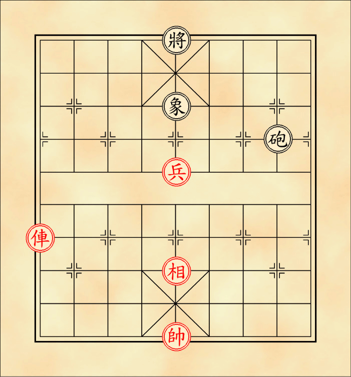

หมากรุกจีน
เฉีย(ช้าง)
สีดำจะใช้ตัวอักษร 象 ส่วนสีแดงจะใช้ตัวอักษร 相 ตัวแทนทัพช้าง ก้าวไกล ใช้คุ้มกันกำลังพลเป็นทัพหลัง จึงไม่สามารถข้ามแม่น้ำได้ และถูกขัดขาได้ด้วย มี 2 ตัวตลอดทั้งเกม กติกาการเดินเฉียมีดังนี้
เดินได้ในแนวทแยงทั้ง 4 มุม ระยะ 2 จุด สามารถกินหมากในจุดปลายทางที่เดินไปได้ แต่หากถูกขัดขา คือมีหมากมาขวางจุดแรกในมุมที่จะเดินไป จะทำให้ไม่สามารถเดินไปยังมุมนั้นได้
 |
 |
ตำแหน่งการเดิน |
การถูกขัดขา |
ไม่สามารถเดินข้ามแม่น้ำไปฝั่งตรงข้ามได้ จึงเป็นหมากที่มีจุดที่เดินไปได้เพียง 7 จุดบนกระดาน น้อยเป็นอันดับ 2 รองจากสือเท่านั้น
จุดเดินเฉียทั้ง 7